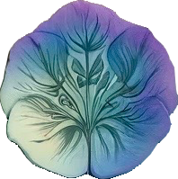
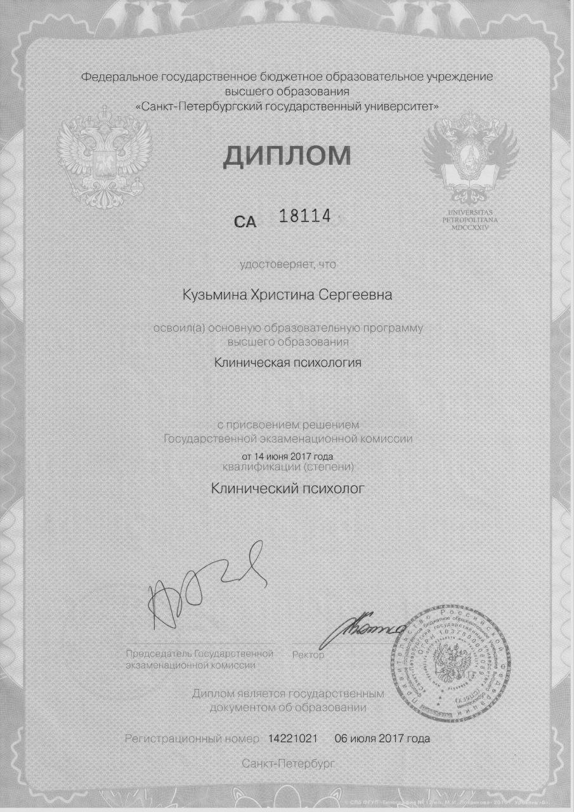
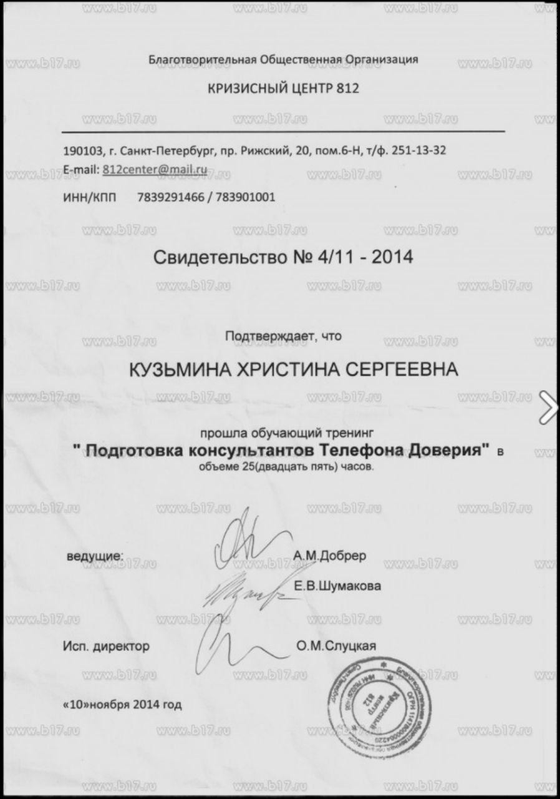
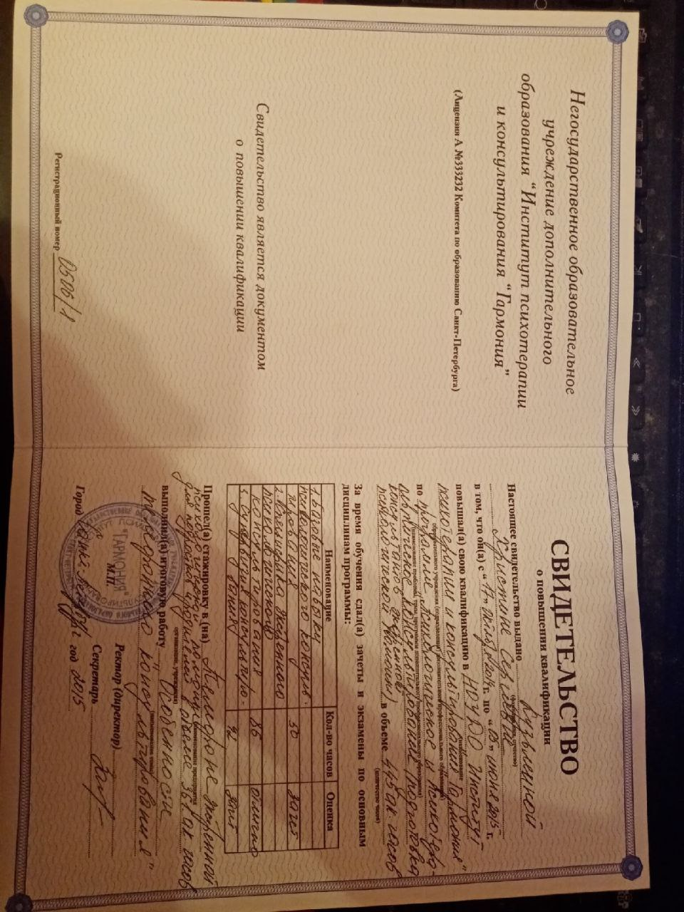
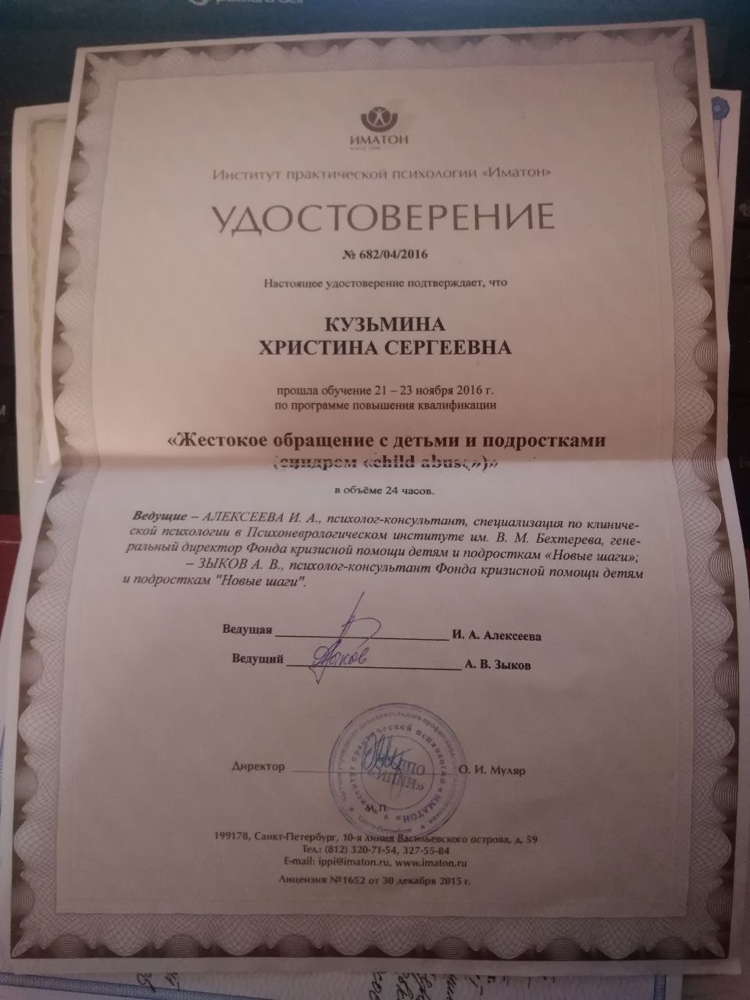
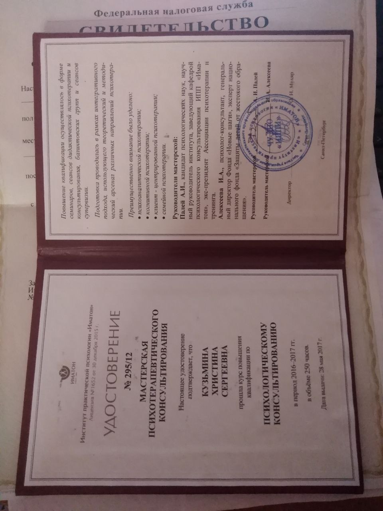
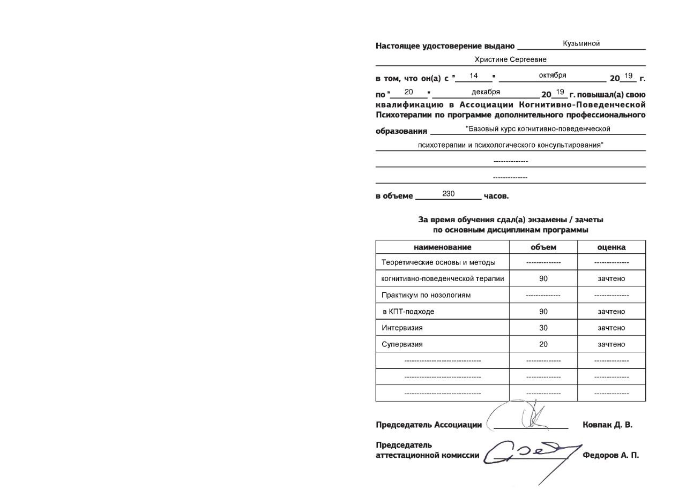
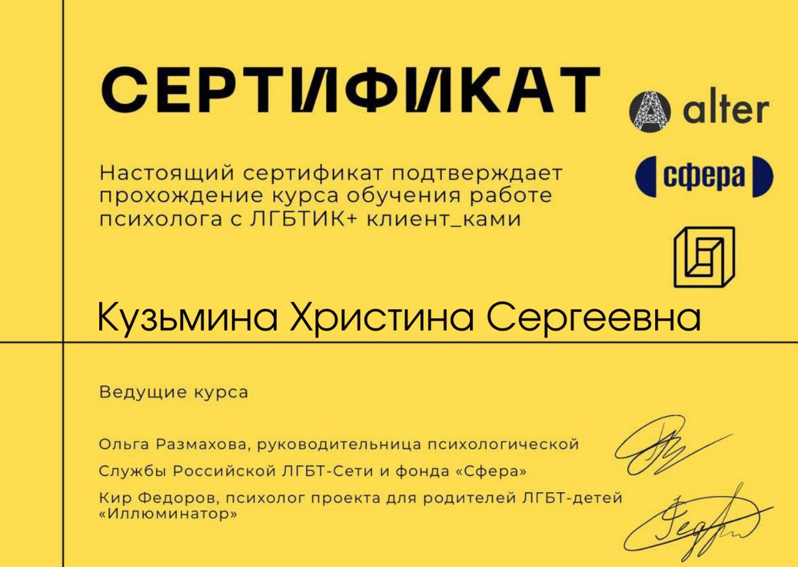
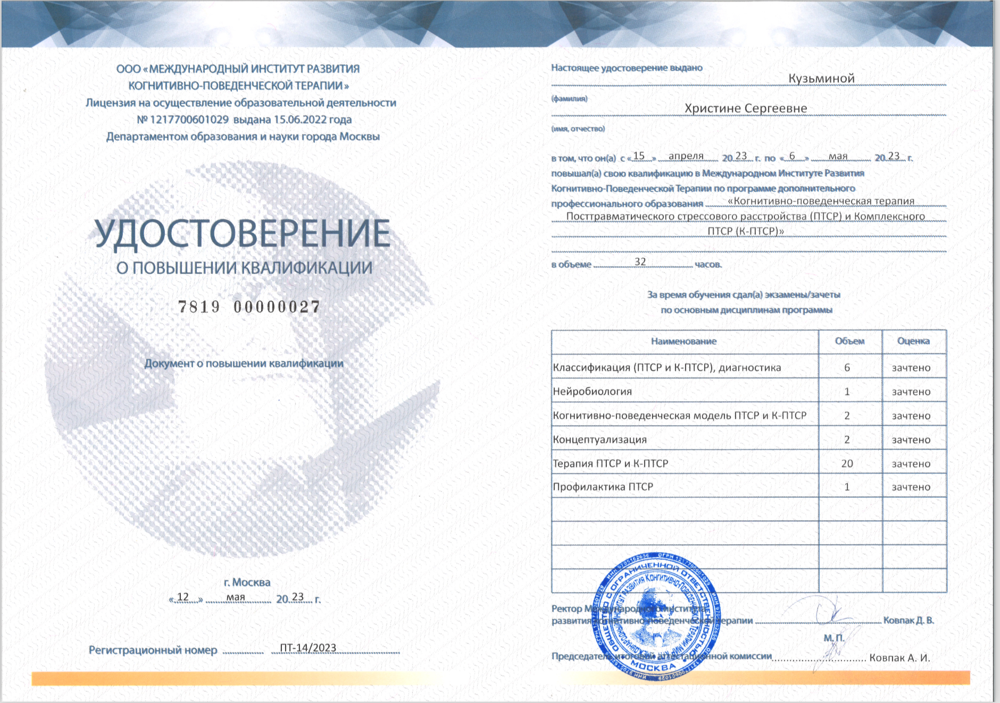

НАЗАД
Запросы
Консультации
Контакты
Образование
- Санкт-Петербургский Государственный Университет
Специальность: Клинический психолог
Квалификация: Диплом специалиста
Годы обучения: 2011 - 2017
- Подготовка консультантов телефона доверия
Выдан: Благотворительная общественная организация, кризисный центр 812
Год получения: 2014
- Психологическое и психотерапевтическое консультирование (подготовка телефонных консультантов)
Выдан: НОУДО институт психотерапии и консультирования "Гармония"
Год получения: 2015
- Курс по определению и работе с жестоким обращением с детьми
Выдан: Институт практической психологии "ИМАТОН"
Год получения: 2017
- Мастерская психотерапевтического консультирования
Выдан: Институт практической психологии "ИМАТОН"
- Базовый курс когнитивно-поведенческой терапии и психологического консультирования
Выдан: Ассоциация Когнитивно-Поведенческой Психотерапии
Год получения: 2019
- Мастерская психотерапевтического консультирования (супервизораская группа)
Выдан: Институт практической психологии "ИМАТОН"
Год получения: 2020
- Обучение работе психолога с ЛГБТИК+ клиент-ками
Выдан: фонд Сфера
Год получения: 2022
- Когнитивно-поведенческая терапия посттравматического стрессового расстройства (ПТСР) и К-ПТСР
Выдан: Международный Институт Развития Когнитивно-Поведенческой Терапии
Год получения: 2023








